...again, Ctrl+N will show the
"create" dialog, from which you should select "GUI
forms->Swing->JFrame"
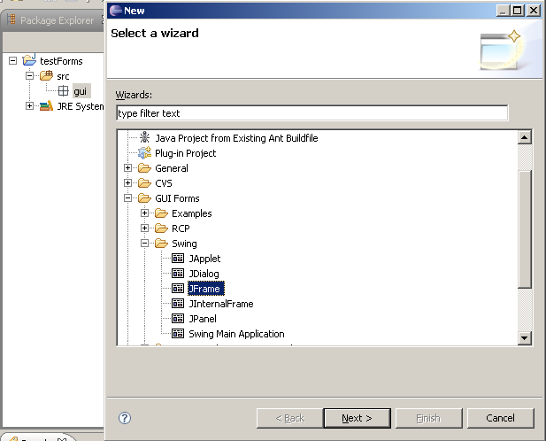
Choose your editor preferences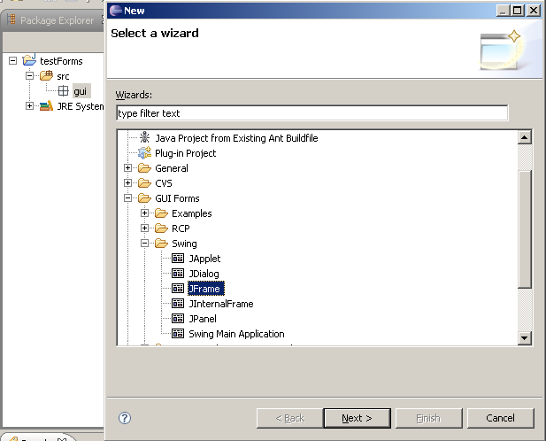
Now we've got a Jigloo editor
open, let's change how it looks. Click on the "Open Jigloo preferences
editor" button in the toolbar to the left of the Jigloo editor. The
Eclipse preferences window appears with Jigloo selected. Choose
"Appearance and Behaviour" and then "Tabbed panels". This is useful
when you want to maximize your design area, but "Split-pane" can be
useful if you want to see immediately the connection between code and
GUI.
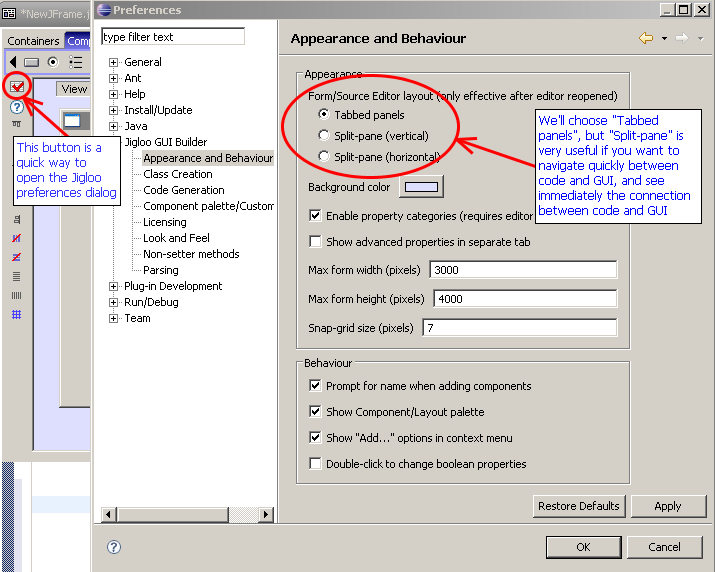
Now hit "OK" and close and re-open the Jigloo editor (you need to do this to change to tabbed panels). If your java class does not immediately re-open in the Jigloo editor, you can ensure that it uses Jigloo's Form Editor by right-clicking on the class and choosing "Open with->Form editor".
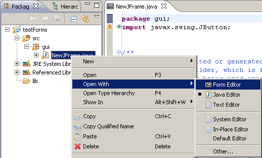
Maximize Jigloo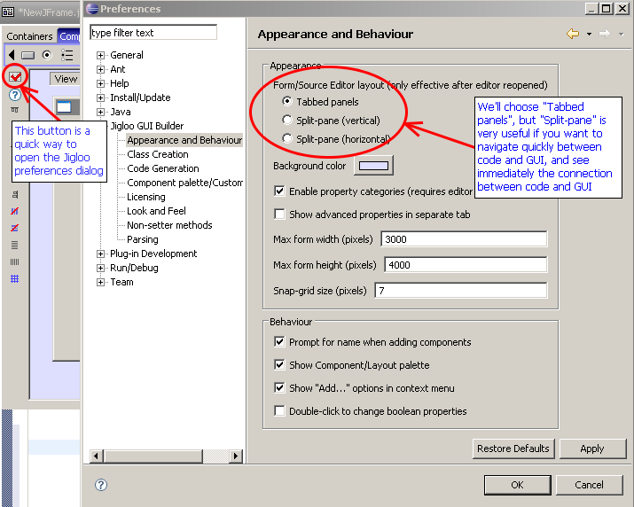
Now hit "OK" and close and re-open the Jigloo editor (you need to do this to change to tabbed panels). If your java class does not immediately re-open in the Jigloo editor, you can ensure that it uses Jigloo's Form Editor by right-clicking on the class and choosing "Open with->Form editor".
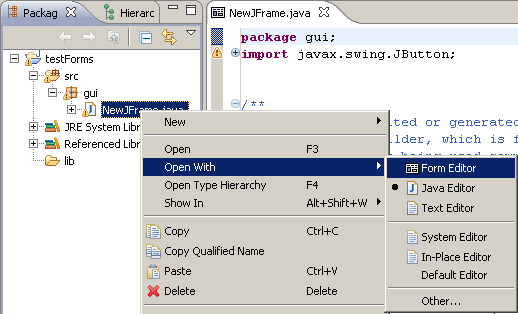
You will probably find it easier
to design a GUI if you can see as much of it as possible, so
double-click on the editor tab and the Jigloo editor will
take over most of Eclipse and arrange itself so you can see an outline
of the elements, the property editor and the form designer.
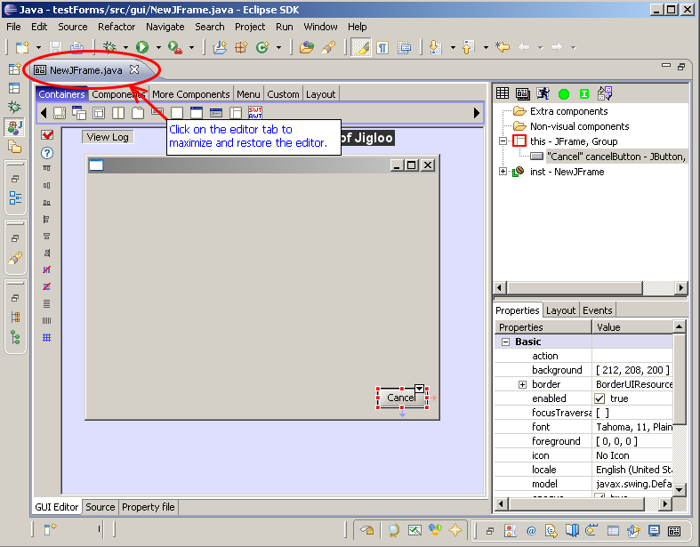
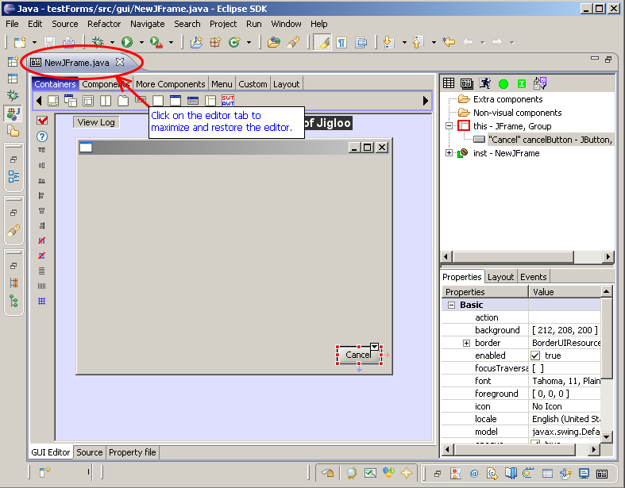
Set layout to GroupLayout
You can either select the
GroupLayout icon in the "layout" palette, or right-click on the JFrame
and select "Set Layout->GroupLayout"

If you are using Java 6 then code will be generated for the javax.swing.GroupLayout which is part of Java 6.
If you are not using Java 6, Jigloo will use the org.jdesktop.layout.GroupLayout (which is the equivalent of the swing GroupLayout) and will let you know that it needs to add the swing-layout-1.0.jar file to your project.

Add OK and Cancel buttonsIf you are using Java 6 then code will be generated for the javax.swing.GroupLayout which is part of Java 6.
If you are not using Java 6, Jigloo will use the org.jdesktop.layout.GroupLayout (which is the equivalent of the swing GroupLayout) and will let you know that it needs to add the swing-layout-1.0.jar file to your project.
Select the JButton icon from the
"Components" palette and move the cursor down to the bottom-right of
the form until it "clicks" into place.
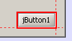
In the dialog that will open (if you have selected that option in the jigloo preferences) you will be able to set the button's name and text (and icon if you want). You can also do all this later. We will make this the "Cancel" button.
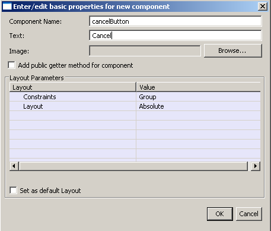
Then hold CTRL and SHIFT down and you will be able to add another button without returning to the component palette.
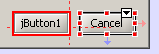
If you aligned the buttons with the bottom-right of the form you should see (as in the image above) a faint red arrow connecting the buttons to the right of the form and a blue arrow connecting them to the bottom of the form, indicating that they are anchored to those sides of the form.
You can also change the anchoring by either re-positioning the buttons next to edges of the form, or by using the drop-down alignment menu which you can access from the "arrow" button on the top-right of the element. Note all the menu options, which allow you to change how the element behaves as the form is resized.
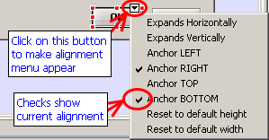
Label the buttons "OK" and "Cancel" - you can double-click on the button to edit the label, or edit the "text" property.


Make OK and Cancel buttons same
width, and same font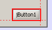
In the dialog that will open (if you have selected that option in the jigloo preferences) you will be able to set the button's name and text (and icon if you want). You can also do all this later. We will make this the "Cancel" button.
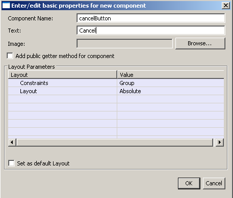
Then hold CTRL and SHIFT down and you will be able to add another button without returning to the component palette.
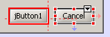
If you aligned the buttons with the bottom-right of the form you should see (as in the image above) a faint red arrow connecting the buttons to the right of the form and a blue arrow connecting them to the bottom of the form, indicating that they are anchored to those sides of the form.
You can also change the anchoring by either re-positioning the buttons next to edges of the form, or by using the drop-down alignment menu which you can access from the "arrow" button on the top-right of the element. Note all the menu options, which allow you to change how the element behaves as the form is resized.
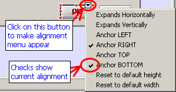
Label the buttons "OK" and "Cancel" - you can double-click on the button to edit the label, or edit the "text" property.
Multi-select the OK and Cancel
buttons - you can do this using either:
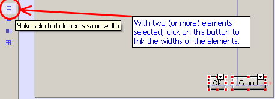
Then select the OK button - notice that now the "same widths" icon has changed to "Unlink the selected element's width from all other elements". This allows you to "unlink" an individual element after it has been linked.
Now multi-select both buttons again and (just for fun) change the font to "bold" by clicking on the "font" property in the "GUI Properties" view and using the dialog that will appear after you click on the small "..." button.
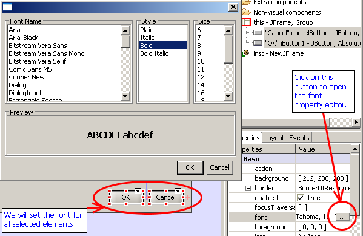
Add JTable- the "rubber band" technique - hold SHIFT down then drag the mouse over both buttons, then release the mouse, or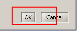
- holding CTRL down as you click on the buttons
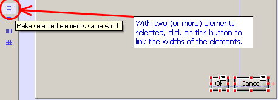
Then select the OK button - notice that now the "same widths" icon has changed to "Unlink the selected element's width from all other elements". This allows you to "unlink" an individual element after it has been linked.
Now multi-select both buttons again and (just for fun) change the font to "bold" by clicking on the "font" property in the "GUI Properties" view and using the dialog that will appear after you click on the small "..." button.
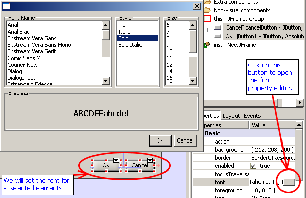
using the "Components" palette -
add it to the top-left of the form.
Surround by JScrollPane and
stretch it across the form.Oops - you just remembered you
really meant to add a JScrollPane first, for the table to go inside,
but instead of undoing what you did, you can right-click on the JTabel
and choose "Surround by->JScrollPane".
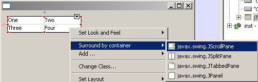
Now select the JScrollPane (either in the outline or by clicking on it's scrollbars, or it's edges - if a scrollpane's child element occupies all of the area of a scrollpane and there are no scrollbars, clicking near the edge of the scrollpane will select the scrollpane). Then drag the side or corner of the JScrollPane so that it stretches from the left to the right of the form and is a bit taller. Again, red and blue arrows should indicate that it is connected to both the left and right sides of the form.
If you open the drop-down menu you will see that "Expands Horizontally" is checked, and as before you can use that menu to change any of the listed properties. Note that you will need to uncheck "Expands horizontally" in order to be able to anchor it left or right.
Add two JTextField (using
quick-repeat) and JButton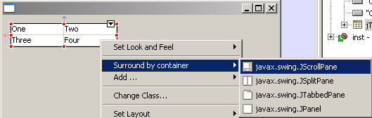
Now select the JScrollPane (either in the outline or by clicking on it's scrollbars, or it's edges - if a scrollpane's child element occupies all of the area of a scrollpane and there are no scrollbars, clicking near the edge of the scrollpane will select the scrollpane). Then drag the side or corner of the JScrollPane so that it stretches from the left to the right of the form and is a bit taller. Again, red and blue arrows should indicate that it is connected to both the left and right sides of the form.
If you open the drop-down menu you will see that "Expands Horizontally" is checked, and as before you can use that menu to change any of the listed properties. Note that you will need to uncheck "Expands horizontally" in order to be able to anchor it left or right.
Just to get a feel for
GroupLayout, add two JTextFields and a JButton, then select them all
and surround by a JPanel and set the JPanel's layout to GroupLayout.
You can resize the panel and move/resize the elements till they look
similar to what is shown below.
Then edit the JPanel's "Border" property to create a titled border with some text.
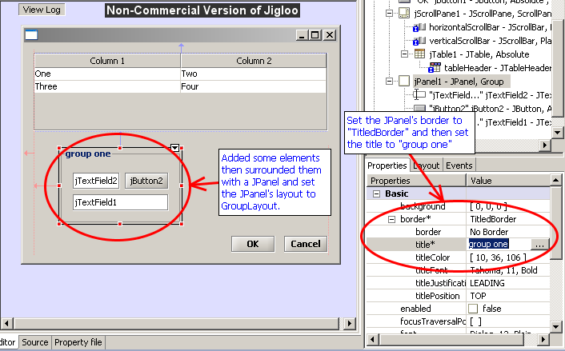
Surround JPanel by JTabbedPane
then copy and paste the JPanel into the JTabbedPaneThen edit the JPanel's "Border" property to create a titled border with some text.
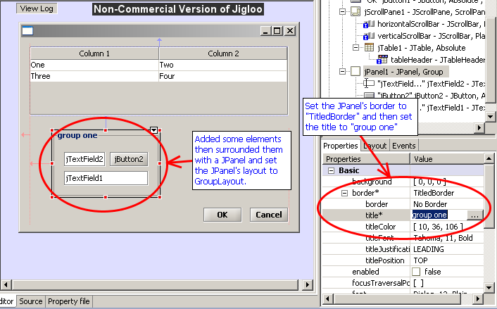
This just demonstrates copy and
paste - or you could try cutting and pasting multiple components too
Add JMenuBar with File and Help
menusNow something a bit more useful
- add a JMenuBar - using the "Menu" palette.
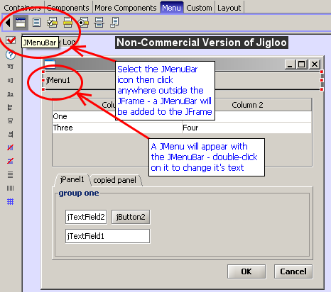
Now double-click on the "jMenu1" menu and change the text to "File", then add a new "Help" JMenu to the menu bar.
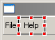
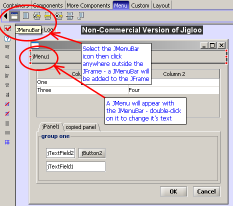
Now double-click on the "jMenu1" menu and change the text to "File", then add a new "Help" JMenu to the menu bar.
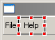